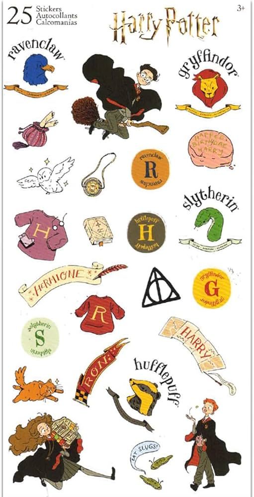

Bienvenidos al mundo de Harry Potter
Harry Potter es una saga de fantasía escrita por J.K. Rowling que sigue la historia de un joven mago que descubre, al cumplir once años, que pertenece a un mundo oculto lleno de magia, amistades, criaturas extraordinarias y desafíos que cambiarán su destino
Elementos del mundo mágico

- Casas: En Hogwarts los estudiantes son asignados a distintas casas, cada una con valores, cualidades y tradiciones que forman parte de su identidad.
- Varitas mágicas: Es una Herramienta esencial para los magos y brujas, utilizadas para channelizar la magia y realizar hechizos. Cada una es única y posee características especiales que la conectan con su dueño.
- Quidditch: Es el deporte más popular entre los magos, jugado sobre escobas voladoras y conocido por su velocidad y emoción.
- Hechizos: Palabras mágicas utilizadas para realizar distintos efectos, desde encender una luz hasta protegerse o enfrentar peligros.
- Criaturas mágicas: El mundo mágico está lleno de seres extraordinarios como dragones, hipogrifos y otras criaturas fascinantes con habilidades únicas.
- Objetos legendarios: Existen objetos especiales con poderes extraordinarios y misterios que pueden cambiar el destino de quienes los poseen.